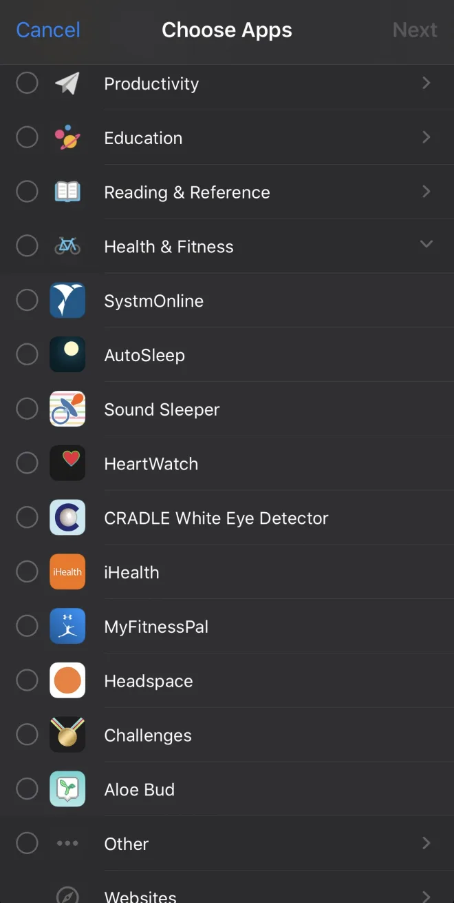

2026'da iOS Screen Time API'si: Apple'ın belgelerinin söylemedikleri
Ağustos ve Eylül 2026'yı iOS'ta bir uygulama engelleyiciyi yayına almakla geçirdim. Uygulama, Screen Time framework'lerini (FamilyControls, DeviceActivity, ManagedSettings ve ManagedSettingsUI) React Native'den, Expo SDK 57 ve react-native-device-activity kütüphanesi (0.6.1) üzerinden kullanıyor. Apple'ın belgeleri her türün ne olduğunu anlatıyor. Ama gerçek bir telefonda, gece boyunca, iOS 26'da nasıl davrandıkları hakkında pek bir şey söylemiyor.
Bu, keşke elimde olsaydı dediğim liste. Cihazda gördüğüm ama belgelenmiş halini bulamadığım davranışlar gözlem olarak işaretli; her iOS sürümünde geçerli olmayabilirler. React Native kütüphanesine özgü maddeler kütüphane olarak işaretli; doğrudan Swift yazıyorsan bunları atlayabilirsin.
- Parçalar
- Entitlement'lar: bundle ID başına bir tane
- Tek iletişim kanalı App Group
- Token'lar opak, bir de seçici
- Eşik olaylarıyla kullanımı ölçmek
- Zamanlamalar sandığın anda başlamıyor
- stopMonitoring, intervalDidEnd'i tetikliyor
- iOS 26 hayalet eşikleri
- Kalkan uygulamanı açamıyor
- Özel uzantıları prebuild'den sağ çıkarmak
- Xcode 26, Simulator ve test
- Bir de Android'de
- Kontrol listesi
- Kısa cevaplar
- Bütün bunlara neden ihtiyacım vardı
1. Parçalar
“Screen Time API” dediğimiz şey dört framework ve pratikte üç uygulama uzantısından oluşuyor:
- FamilyControls: yetkilendirme (
AuthorizationCenter, öz denetim uygulaması için.individualile) ve uygulama, kategori ve web alan adı token'larından oluşan birFamilyActivitySelectiondöndürenFamilyActivityPicker. - ManagedSettings: bu token'ları kalkanla korumak için içine koyduğun bir
ManagedSettingsStore. - DeviceActivity: zamanlamalar ve kullanım eşiği olayları. Callback'ler (
intervalDidStart,intervalDidEnd,eventDidReachThresholdve uyarı varyantları) uygulamana değil, birDeviceActivityMonitoruzantısına iletiliyor. - ManagedSettingsUI: kalkanın görünümünü belirleyen bir
ShieldConfigurationDataSourceuzantısı ve düğmelerini yöneten birShieldActionDelegateuzantısı.
İşin özü uzantılar. Kullanıcının süresi bittiğinde uygulamam genelde askıya alınmış ya da kapatılmış oluyor, yani kalkanı yeniden kaldıran şey izleyici uzantısı. Tasarımını, bir şey olduğunda uygulamanın süreci hiç orada olmayacakmış gibi yap.
2. Entitlement'lar: bundle ID başına bir başvuru
Family Controls (Distribution) entitlement'ı bundle ID başına onaylanıyor. Üç uzantıyla bu, dört başvuru demek. Benimkiler şunlardı:
com.honorfit.blocker(uygulama)com.honorfit.blocker.ShieldConfigurationcom.honorfit.blocker.ShieldActioncom.honorfit.blocker.ActivityMonitorExtension
Onaylandıktan sonra geliştirici portalında her bir App ID için Family Controls (Distribution) capability'sini etkinleştir, sonra bir App Group oluşturup dördüne de ekle. Birini atlarsan o target'ın provisioning'i başarısız olur. Onaylar anında gelmiyor, bu yüzden dört başvurunun hepsini ilk gün, daha fazla kod yazmadan yap.
Her uzantının entitlements dosyası sonunda aynı oluyor:
<key>com.apple.developer.family-controls</key>
<true/>
<key>com.apple.security.application-groups</key>
<array>
<string>group.com.honorfit.blocker</string>
</array>Expo/EAS'te build servisi yalnızca bildiği uzantılar için provisioning profile oluşturuyor. Her target'ı entitlement'larıyla birlikte app.json içinde extra.eas.build.experimental.ios.appExtensions altında tanımlıyorum:
"appExtensions": [
{
"bundleIdentifier": "com.honorfit.blocker.ShieldConfiguration",
"targetName": "ShieldConfiguration",
"entitlements": {
"com.apple.developer.family-controls": true,
"com.apple.security.application-groups": ["group.com.honorfit.blocker"]
}
}
// ...same for ShieldAction and ActivityMonitorExtension
]3. Tek iletişim kanalı App Group
Uygulaman ve uzantıların ayrı süreçler ve neredeyse hiçbir zaman aynı anda çalışmıyorlar. Paylaştıkları tek şey, genelde UserDefaults(suiteName:) olarak kullanılan App Group container'ı. Uzantıların ihtiyaç duyduğu her şeyin (kaydedilmiş seçim, kalkan metni, bir eşik tetiklendiğinde ne yapılacağı) önceden oraya yazılmış olması gerekiyor.
react-native-device-activity bunu sonuna kadar götürüyor. Uygulama, actions_for_{activity}_{callback}_{event} gibi bir anahtarın altına bir “eylemler” listesi yazıyor ve izleyici uzantısı bunlara callback tetiklendiği anda bakıyor. Bunun işe yarar bir sonucu var: zaten çalışan bir izleyicinin ne yapacağını, onu yeniden başlatmadan değiştirebilirsin. Uzantılar ayrıca okumadan önce CFPreferencesAppSynchronize çağırıyor, böylece uygulamanın en son yazdıklarını görüyorlar:
let appGroup = Bundle.main.object(
forInfoDictionaryKey: "REACT_NATIVE_DEVICE_ACTIVITY_APP_GROUP") as? String
var userDefaults = UserDefaults(suiteName: appGroup)
// in each callback:
CFPreferencesAppSynchronize(kCFPreferencesCurrentApplication)
if let actions = userDefaults?.array(forKey: triggeredBy) { /* run them */ }4. Token'lar opak, bir de seçici
Seçici uygulamana ApplicationToken'lar, ActivityCategoryToken'lar ve WebDomainToken'lar veriyor, başka hiçbir şey değil. Tasarım gereği uygulama bir token'ı tekrar “Instagram”a çeviremiyor. Yapabildiği şey onları saymak, bu yüzden engelleme listesi ekranım “3 uygulama, 1 kategori” gösteriyor. Bütün gizlilik modeli bu ve iyi bir model: uygulamam neyi engellediğini kelimenin tam anlamıyla bilmiyor.

FamilyActivityPicker'ı. Kullanıcı uygulama adlarını ve simgelerini görüyor; senin uygulamana ise sadece opak token'lar dönüyor.Kalkan uzantısında durum farklı. Orada sistem, kalkanla korunan uygulama için sana bir Application veriyor ve ben onun localizedDisplayName değerini kalkan metninde kullanıyorum. Uygulamanın kendisi ise her zaman sadece token görüyor.
İki pratik not:
- Kategoriler kategori olarak kalıyor. Kullanıcı “Sosyal”i seçerse, seçim
includeEntireCategoryile oluşturulmadıysa içindeki uygulamaları değil, bir kategori token'ını alıyorsun. Gösterdiğim sayılar dürüst olsun diye bunufalsetutuyorum (adını söyleyemediğim uygulamaların sayısı değil, “1 kategori”). - kütüphane react-native-device-activity'nin kalıcı seçicisi, kaydedilmiş seçimi (yeniden açtığında görünen onay işaretlerini) yalnızca
includeEntireCategoryprop'unu, herhangi bir değerle, verirsen önceden yüklüyor. Yüklemeyi tetikleyen şey onun native setter'ı. Bu prop olmadan, seçim kaydedilmiş olsa bile seçici her seferinde boş açılıyor.
<DeviceActivitySelectionSheetViewPersisted
familyActivitySelectionId="distracting-apps"
includeEntireCategory={false} // must be present, or nothing preloads
onSelectionChange={(e) => setCounts(e.nativeEvent)}
onDismissRequest={() => setPickerVisible(false)}
/>kütüphane Bir tane daha: kütüphanenin blockSelection'ı token'ları kalıcı bir engelleme listesine ekliyor. Kullanıcı seçimini düzenledikten sonra çıkarılan uygulamalar kalkanlı kalmaya devam ediyor. Ben her seferinde önce resetBlocks() çağırıyor, sonra güncel seçimi yeniden engelliyorum.
5. Eşik olaylarıyla kullanımı ölçmek
HonorFit sana sadece engelli bir uygulama ekrandayken azalan bir dakika bakiyesi veriyor. DeviceActivity'de “ne kadar kullandığını söyle” diye bir çağrı yok; bir seçimin toplam kullanımı belirli bir süreye ulaştığında bir kez tetiklenen eşik olayları var. Ben de her 15 saniyelik kullanım için, adı dakika cinsinden olan bir olay kaydediyorum: used-0.25, used-0.5, … bakiyeye kadar. Çeyrekler ikili kayan noktada tam olarak temsil edildiği için bu adlar Number()'dan kayıpsız geri dönüyor. Kütüphanenin altında bu, düz Apple API'si:
let schedule = DeviceActivitySchedule(
intervalStart: DateComponents(hour: 9, minute: 45, second: 0), // see section 6
intervalEnd: DateComponents(hour: 23, minute: 59, second: 59),
repeats: false
)
let event = DeviceActivityEvent(
applications: selection.applicationTokens,
categories: selection.categoryTokens,
webDomains: selection.webDomainTokens,
threshold: DateComponents(minute: 0, second: 15),
includesPastActivity: false // iOS 17.4+
)
try DeviceActivityCenter().startMonitoring(
DeviceActivityName("honorfit-distracting-apps-1790000000000"),
during: schedule,
events: [DeviceActivityEvent.Name("used-0.25"): event] // ...one per step
)includesPastActivity: false (varsayılan) olayların kaydedilmesinden önceki kullanımın sayılmadığı anlamına geliyor. Bu, bir sonraki bölümdeki zamanlama numarası için önemli.
Son olay tetiklendiğinde izleyici uzantısı kalkanı yeniden uyguluyor ve bir “süre doldu” bildirimi gönderiyor. Her 15 saniyelik olay, sabit bir kimliği olan tek bir bildirimi güncelliyor; böylece bildirim yerinde değişiyor ve kaba bir canlı geri sayım gibi çalışıyor. interruptionLevel = .passive onu banner göstermeden, sessizce Bildirim Merkezi'ne iletiyor.
kütüphane Olay ya da aktivite adlarında alt çizgi kullanma. Kütüphane tetiklenen olayları events_{activity}_{callback}_{eventName} altında saklıyor ve geri okurken _ karakterine göre bölüyor. used_7 adlı bir olay used olarak geri geliyor ve hiçbir şey eşleşmiyor. Belirtisi, hiç azalmayan bir bakiyeydi.
6. Zamanlamalar sandığın anda başlamıyor
Eşik olayların sessizce hiç tetiklenmiyorsa, sebebi büyük ihtimalle bu.
“Şimdi” zaten geçmişte kalmış
gözlem Tekrarlanmayan bir DeviceActivitySchedule tarih bileşenleriyle eşleştiriliyor ve izleyici eşleşen bir sonraki aralığı çalıştırıyor. intervalStart olarak o anki saati verirsen, framework onu değerlendirene kadar o an geçmiş oluyor. Bir sonraki eşleşme yarın ve bugün hiçbir şey tetiklenmiyor: eşik yok, callback yok, hata yok. Çözüm, başlangıcı geriye alıp “şimdi”nin aralığın içinde kalmasını sağlamak:
const now = new Date();
const backdated = new Date(now.getTime() - 15 * 60_000);
const intervalStart =
backdated.getDate() === now.getDate()
? { hour: backdated.getHours(), minute: backdated.getMinutes(), second: backdated.getSeconds() }
: { hour: 0, minute: 0, second: 0 }; // don't wrap past midnight
await startMonitoring(activityName,
{ intervalStart, intervalEnd: { hour: 23, minute: 59, second: 59 }, repeats: false },
events);Başlangıcı geriye almak, includesPastActivity: false sayesinde kullanıcıdan önceki scroll süresi için kesinti yapamaz. Ayrıca aralığı Apple'ın alt sınırının üstünde tutar: 15 dakikadan kısa zamanlamalar reddediliyor ve bu, gece yarısından hemen önce seans başlatan herkesin başına iş açıyor.
“Şimdi”yi içeren bir zamanlama hemen başlıyor
gözlem İşin öbür yüzü: 00:00–23:59:59 arası bir zamanlama o anki saati içerdiği için bir sonraki gece yarısında değil, hemen başlıyor. Yarın için planlamanın bulduğum iki yolu:
- Süresi zaten dolmuş bir zamanlama. T, günün şu anki saatinden bir dakika öncesi olmak üzere
[00:00, T). Bugünkü örnek bitmiş olduğu için framework yarınkini planlıyor. Harcanmamış bir bakiyeyi gece yarısının ötesine taşımak için bunu kullanıyorum. - Korumalı eylemlerle
repeats: true. Bugünkü örnek hemen başlıyor ve hiçbir şey yapmıyor (her eylem korumalı, bir sonraki bölüme bak). Asıl işi yarınki yapıyor.
gözlem Belirli bir tarihi hedeflemek için zamanlamada tam yıl/ay/gün bileşenleri kullanma. Denediğimde uzantı callback'leri güvenilmez hale geldi; bu da Apple Developer Forums'taki raporlarla örtüşüyor (thread 729841). Saat/dakika/saniyede kal.
Bir uyarı: bu gece yarısı davranışları sadece cihazda, gece boyunca ortaya çıkıyor. Etraflarına korumalar kurdum ama istediğim kadar çok gerçek gece yarısını kayıt altına almadım, o yüzden bu bölümü bir spesifikasyon olarak değil, “benim gördüklerim” olarak oku.
7. stopMonitoring, intervalDidEnd'i tetikliyor
gözlem stopMonitoring çağırmak ya da zaten çalışan bir izleyicinin adıyla startMonitoring çağırmak, iOS'un uzantında zamanlama doğal olarak bitmiş gibi intervalDidEnd çağırmasına yol açıyor. intervalDidEnd'in bir güvenlik ağı olarak kalkanı yeniden kaldırıyorsa (benimki kaldırıyor, böylece bir izleyicinin süresi dolup uygulamaları engelsiz bırakamıyor), uygulama her izleyici durdurduğunda uzantı kısa bir süreliğine her şeyi kalkanla kapatıyor.
Bir kullanıcı belirtiyi bildirdi: HonorFit'i her açtığında Spotify duraklıyordu. İzleyiciyi durdurmak, uzantının seçimi bir anlığına kalkanla kapatmasına yol açıyordu; bu da uygulama kalkanları yeniden kaldırmadan önce Spotify'ı askıya alıyordu.
İki çözüm var ve ikisi de gerekli. Birincisi, durdurmadan önce uzantının eylemlerini sil, böylece çalıştıracak hiçbir şeyi kalmasın:
function stopActivities(names: string[]): void {
for (const name of names) RNDA.cleanUpAfterActivity(name); // clear actions first
RNDA.stopMonitoring(names); // then stop
}İkincisi, her intervalDidEnd ve intervalDidStart eylemine, zamanlamanın gerçek sınırından bir dakikalık pay çıkarılmış bir “bundan önce değil” zaman damgası ver. Uzantı bir şey çalıştırmadan önce bunu kontrol ediyor:
// TypeScript: register the safety net
RNDA.configureActions({
activityName,
callbackName: 'intervalDidEnd',
actions: [{
type: 'blockSelection',
familyActivitySelectionId: 'distracting-apps',
neverTriggerBefore: new Date(intervalEndMs - 60_000),
}],
});
// Swift, in the DeviceActivityMonitor extension
if let neverTriggerBefore = neverTriggerBefore {
let now = Date().timeIntervalSince1970 * 1000
if now < neverTriggerBefore { return false } // skip this action
}Düz Swift'te: gerçek bitiş zamanını App Group'ta sakla ve intervalDidEnd erken çağrıldığında hiçbir şey yapmadan çıksın.
8. iOS 26 hayalet eşikleri
iOS 26.x'te eventDidReachThreshold bazen hiçbir gerçek kullanım olmadan tetikleniyor: zamanlamayı kurduktan hemen sonra ya da bir süre kilitli duran telefon eline alındığında ya da şarja takıldığında. Apple bunu geliştirici forumu başlıklarında kabul etti (809410, 811305, 814559). Söylenene göre bir 26.5 betasında düzeltildi, ama insanlar sonrasında da bildirmeye devam etti. Benim uygulamamda belirti, telefon cepte durduktan sonra “süre bitti” olmasıydı; çünkü uzantı kalkanı yeniden kaldırıyor ve bakiye sıfıra iniyordu.
Olayın tetiklenmesini durduramazsın, ama ona inanmayı reddedebilirsin. Gerçek eşiklere dair iki olgu işin çoğunu görüyor:
- Kullanım gerçek saatten hızlı ilerleyemez.
used-7, izleyici kurulduktan sonraki 7 dakikadan daha erken meşru bir şekilde tetiklenemez. Her eşik eylemineverTriggerBefore = armedAt + N minutes − 5staşıyor, böylece uzantı imkânsız derecede erken tetiklenmeleri atlıyor. - Gerçek kullanım parça parça gelir; hayaletler topluca gelir. Uygulama tetiklenen olayları geri okurken, en düşük ve en yüksek eşik birbirinden yaklaşık 3 saniye içinde tetiklenmiş ama arada bir dakika ya da daha fazla kullanım farkı varsa bunu hayalet olarak kabul ediyor.
// Guard 1: drop thresholds that fired before they could have been reached
if (at < startedAt + minutes * 60_000 - 5_000) continue;
// Guard 2: lowest and highest fired in the same instant, a minute or more apart
if (highest.minutes - lowest.minutes >= 1 &&
Math.abs(highest.at - lowest.at) <= 3_000) {
return { usedMinutes: 0, partialMs: 0 }; // phantom: ignore the lot
}İkinci koruma uzantıda değil uygulamada çalışıyor, yani bir hayalet yine de kalkanı kaldırabiliyor. Ama bakiye korunuyor ve uygulama bir sonraki açılışta kalkanı yeniden indiriyor. Toplu tetiklenme tespitini uzantının içinde yapmak özel Swift kodu gerektirir ve onu henüz yazmadım.
gözlem İlgili bir sorun ters yönde işliyor: tetiklenmesi gereken ama tetiklenmeyen eşikler. iOS 26'da girip çıkmalı kullanımda, yeni bir izleyicinin ilk 15 saniyelik eşiğinin zamanında tetiklendiğini, sonrakilerinse birleştirildiğini ya da tamamen düştüğünü gördüm (used-0.25 tetiklendi, used-0.5 ve sonrası hiç tetiklenmedi). Benim geçici çözümüm, zaten kullanım ölçmüş her izleyiciyi bayatlamış kabul edip uygulama her arka plana geçtiğinde kalan bakiye üzerinden yeni bir izleyici kurmak. Bu, her yeniden başlatmada en fazla 15 saniyelik kullanımı affetmek demek ve bence sorun değil.
9. Kalkan uygulamanı açamıyor
Akla gelen ilk tasarım, “Daha fazla süre kazan” yazan ve uygulamanı açan bir kalkan düğmesi. Bunu yapmanın desteklenen bir yolu yok; Apple DTS, bir kalkan uzantısının ana uygulamasını başlatması için bir API olmadığını söylüyor. Bir ShieldActionDelegate, düğmeye basılmasına bir ShieldActionResponse ile (.none, .close ya da .defer) cevap veriyor ve bunların hiçbiri bir şey açmıyor.
gözlem Karşına çıkacak geçici çözüm (ShieldAction uzantısından NSExtensionContext().open(url); kütüphane bunu openUrl olarak sunuyor), Eylül 2026'da bir cihazda test ettiğimde güncel iOS'ta hiçbir şey yapmadı. Düğme sadece kalkanı kapattı. Düğmeye dokunulduğunda bildirim göndermek de bende güvenilir çalışmadı.
Onun yerine yayına aldığım şey şu: kalkanda tek bir “Kapat” düğmesi var ve ShieldConfiguration uzantısı, kalkan her gösterildiğinde yerel bir bildirim gönderiyor. Kullanıcı banner'a dokunuyor ve uygulamaya düşüyor. Uygulama bildirimin içeriğini önceden App Group'a yazıyor ve ön plana geldiğinde bildirimi kaldırıyor. iOS tek bir gösterim için kalkan yapılandırmasını birkaç kez isteyebiliyor, bu yüzden gönderim debounce ediliyor:
func postShieldShownNotification(placeholders: [String: String?]) {
guard let config = userDefaults?.dictionary(forKey: "honorfitShieldShownNotification"),
let payload = config["payload"] as? [String: Any] else { return }
let minInterval = config["minIntervalSeconds"] as? Double ?? 30
let now = Date().timeIntervalSince1970
let lastSentAt = userDefaults?.double(forKey: "honorfitShieldShownNotificationLastSentAt") ?? 0
if now - lastSentAt < minInterval { return }
userDefaults?.set(now, forKey: "honorfitShieldShownNotificationLastSentAt")
// builds a UNMutableNotificationContent and adds a UNNotificationRequest
// with a fixed identifier, so repeats replace rather than stack
sendNotification(contents: payload, placeholders: placeholders)
}
class ShieldConfigurationExtension: ShieldConfigurationDataSource {
override func configuration(shielding application: Application) -> ShieldConfiguration {
postShieldShownNotification(placeholders: [
"applicationOrDomainDisplayName": application.localizedDisplayName
])
return buildShield(/* title, subtitle, colors from the App Group */)
}
// ...same hook in the category and web-domain overloads
}Bu bir hack ve kullanıcının bildirimlere izin vermesine bağlı, ama benim için uygulamaya güvenilir şekilde ulaşan tek yol buydu.
10. Özel uzantıları prebuild'den sağ çıkarmak
kütüphane Expo kullanıyorsan, expo prebuild react-native-device-activity config plugin'ini çalıştırıyor ve bu plugin varsayılan olarak her çalıştırmada kütüphanenin hazır uzantı kaynaklarını ./targets içine kopyalıyor. Özelleştirdiğim ShieldConfiguration sessizce üzerine yazıldı. Çözüm tek bir plugin seçeneği:
["react-native-device-activity", {
"appleTeamId": "XXXXXXXXXX",
"appGroup": "group.com.honorfit.blocker",
"copyToTargetFolder": false
}]Bedeli: kütüphaneyi güncellediğinde, onun targets/ klasörünü ve paylaşılan Swift kodunu seninkilerle elle karşılaştırıp değişikliklerini yeniden uygulaman gerekiyor.
11. Xcode 26, Simulator ve test
- iOS 26 SDK ile derle. App Store Connect artık iOS 26'dan eski bir SDK ile derlenmiş yüklemeleri reddediyor (ITMS-90725). EAS'te build imajını
macos-tahoe-26.5-xcode-26.6olarak sabitliyorum. - Simulator seni ancak yolun bir kısmına kadar götürür. iOS 26 simülatörlerinde yetkilendirme istemi ve seçici görünüyor. Ama yetkilendirme hiçbir zaman tamamlanmıyor (“Allow with Passcode” (Parolayla İzin Ver), Simulator'ın ayarlayamadığı bir cihaz parolası istiyor), seçicide listelenecek uygulama yok ve izleyici uzantısı hiç çalışmıyor. 5. ile 9. bölümler arasındaki her şey fiziksel bir cihaz gerektiriyor.
- ManagedSettings çağrılarını yetkilendirmeye bağla. Yetki yokken store'a dokunmak Simulator'da bir sistem parolası istemi açtı ve bu UI testlerimi bozdu. Herhangi bir kalkan çağrısından önce yetkilendirme durumunu kontrol ediyorum.
- Yetkilendirme hatalarını arayüzde göster. TestFlight test kullanıcılarının bir konsolu yok.
requestAuthorizationsessizce başarısız olursa düğme sadece bozukmuş gibi görünür. Hatayı ve durumu bir uyarıda gösteriyorum. - Gece boyunca test et. En kötü hatalarım (süre kaldığı halde bütün gece engelli kalmak, müziğin duraklaması) kod incelemesinde görünmüyordu ve sadece bir cihazda saatler içinde ortaya çıkıyordu.
12. Bir de Android'de
Karşılaştırma için: Android'de resmi bir karşılığı yok, o yüzden kendin yapıyorsun. HonorFit'in Android engelleyicisi bir ön plan hizmeti (uygulama engelleme listedeki türlerin hiçbirine uymadığı için türü specialUse); ekran açıkken hangi uygulamanın önde olduğunu öğrenmek için saniyede bir UsageStatsManager'ı yokluyor. Engelli bir uygulama açıkken bakiye sıfırsa, üstüne bir TYPE_APPLICATION_OVERLAY kilit ekranı çiziyor (“Diğer uygulamaların üzerinde göster”). Bir boot receiver ve bir watchdog alarmı, yeniden başlatmalardan, uygulama güncellemelerinden ve agresif üretici pil yöneticilerinden sonra hizmeti yeniden başlatıyor.
Ödünleşimler iOS'takinin tam tersi yönde. Gerçek paket adlarını görüyorsun, yani gizlilik işletim sisteminin dayattığı değil, senin tuttuğun bir söz. Engelli bir uygulama bir yoklama aralığı kadar görünür kalabiliyor ve overlay'in altında çalışmaya devam ediyor. Ayrıca ön plan hizmeti türü, overlay izni ve paket görünürlüğü için Play Console beyanları yazacaksın. AccessibilityService'ten bilerek kaçındım; en sıkı incelemeden geçen o.
13. Kontrol listesi
| Belirti | Muhtemel sebep | Çözüm |
|---|---|---|
| Bir target için provisioning başarısız | O bundle ID'de entitlement ya da App Group eksik | Her bundle ID için Family Controls (Distribution) iste ve App Group'u ekle |
| Hiçbir zaman eşik olayı gelmiyor | intervalStart = şimdi, yani izleyici yarına planlanmış | Başlangıcı geriye al; aralığı ≥ 15 dk tut |
| Yarın için kurulan izleyici bugün çalışıyor | Zamanlama şu anki saati içeriyor | Bugün süresi dolmuş bir [00:00, T) zamanlaması ya da korumalı eylemlerle repeats: true |
| Uygulaman açıldığında uygulamalar bir anlığına kalkanlanıyor | stopMonitoring, intervalDidEnd'i tetikliyor | Durdurmadan önce eylemleri temizle; bir “bundan önce değil” zamanıyla koru |
| Telefon boşta durduktan sonra “süre bitti” | iOS 26 hayalet eşikleri | Gerçek saat koruması ve toplu tetiklenme filtresi |
| Sonraki eşikler hiç tetiklenmiyor | Aralıklı kullanımda düşüyor/birleştiriliyor | Her arka plana geçişte yeni bir izleyici kur |
| Kalkan düğmesi uygulamayı açmıyor | Desteklenen bir API yok | Kalkan gösterildiğinde ShieldConfiguration'dan bildirim gönder |
| Tetiklenen olaylar eşleşmiyor (RN) | Olay adında alt çizgi var | used_7 değil, used-7 kullan |
| Seçici boş açılıyor (RN) | includeEntireCategory prop'u eksik | Herhangi bir değerle ver |
14. Kısa cevaplar
Her uzantı için Family Controls entitlement'ı gerekiyor mu?
Evet. Bundle ID başına veriliyor. Uygulama artı bir DeviceActivityMonitor, bir ShieldConfiguration ve bir ShieldAction uzantısı dört onay demek ve her App ID'ye ortak App Group'un da eklenmesi gerekiyor.
DeviceActivity eventDidReachThreshold neden tetiklenmiyor?
Bende sebep genelde “şimdi” başlayan, tekrarlanmayan bir zamanlamaydı; o da yarına planlanıyor. intervalStart'ı geriye al. iOS 26'da, girip çıkmalı kullanımda sonraki dakika altı eşikler de düştü; yeni bir izleyici kurmak işe yaradı.
Bir ShieldAction ya da ShieldConfiguration uzantısı ana uygulamayı açabilir mi?
Desteklenen bir API ile açamaz ve testlerimde NSExtensionContext geçici çözümü güncel iOS'ta hiçbir şey yapmadı. Benim yayına aldığım şey, kalkan gösterildiğinde ShieldConfiguration'dan gönderilen yerel bir bildirim.
Screen Time API'sini iOS Simulator'da test edebilir miyim?
Kısmen. İstem ve seçici iOS 26 simülatörlerinde görünüyor, ama yetkilendirme tamamlanmadı, seçicide listelenecek bir şey yoktu ve izleyici uzantısı hiç çalışmadı. Bir cihaz kullan.
15. Bütün bunlara neden ihtiyacım vardı
Ekran süresini şınav çekerek kazandığın bir uygulama engelleyici olan HonorFit'i yaptım. Onur sistemiyle çalışıyor: tekrarlarını kendin giriyorsun; kamera yok, yapay zekâ yok, ağ çağrısı yok. Yukarıdaki her şey, “kazandığın dakikalar sadece engelli bir uygulama ekrandayken azalır” fikrini bir iPhone'da çalıştırmak için gerekenlerdi. Çalışırken görmek istersen, App Store'da ve Google Play'de. Buraya böyle bir uygulama yapmak için değil de kullanmak için geldiysen, şınavlı uygulama engelleyicilerin nasıl çalıştığını ve rakipler dahil mevcut olanların dürüst bir derlemesini yazdım. Burada olmayan bir Screen Time davranışıyla karşılaştıysan ya da yukarıdaki bir şeyin daha yeni bir iOS'ta yanlış olduğunu fark ettiysen, duymak isterim.